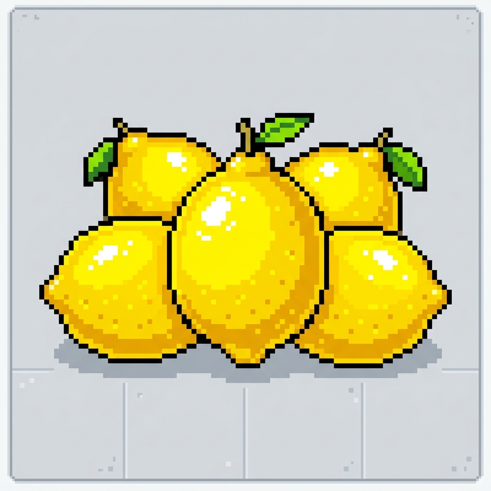

5 limones
1 litro de agua
3 cucharadas de azúcar
1. Lavar los limones y cortarlos por la mitad.
2. Exprimir los 5 limones retirando las semillas.
3. Verter el jugo de limón en una jarra con el litro de agua.
4. Agregar las 3 cucharadas de azúcar y revolver bien hasta disolver.
5. Servir fría con hielo al gusto.
